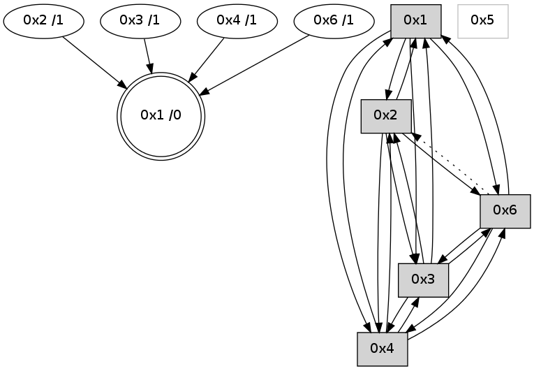

>> << IDX [start] -100 -25 -5 +0 +5 +25 +100 [680.243113041]
 Previous packets
----------------------------------------------------------------------
675.322031 beacon01(adaf) #0 coord=01,02,05,03,04,06 cycle=432.0ms assoc
-- color-indic=0 64 a0 2a
675.331991 beacon02(adaf) #0 coord=01,02,05,03,04,06 cycle=432.0ms assoc 64 f1 d5
675.341992 beacon05(adaf) #0 coord=01,02,05,03,04,06 cycle=432.0ms assoc 64 57 ff
675.351991 beacon03(adaf) #0 coord=01,02,05,03,04,06 cycle=432.0ms assoc 64 cb db
675.361992 beacon04(adaf) #0 coord=01,02,05,03,04,06 cycle=432.0ms assoc 64 6d f1
675.371993 beacon06(adaf) #0 coord=01,02,05,03,04,06 cycle=432.0ms assoc 64 19 ed
675.383682 [Hello(4): seq=477 sym=2,3,1,6 sysInfo= stat=2:0,0,0,0/3:4,0,5,0/1:0,0,11,0/6:0,0,0,0]
675.389020 [Hello(1): seq=376 sym=2,4,3,6 sysInfo= stat=2:3,0,3,0/4:1,0,1,0/3:14,0,4,0/6:0,0,0,0]
----------------------------------------------------------------------
675.814139 beacon01(adaf) #0 coord=01,02,05,03,04,06 cycle=432.0ms assoc
-- color-indic=0 64 64 45
675.824101 beacon02(adaf) #0 coord=01,02,05,03,04,06 cycle=432.0ms assoc 64 35 ba
675.834101 beacon05(adaf) #0 coord=01,02,05,03,04,06 cycle=432.0ms assoc 64 93 90
675.844100 beacon03(adaf) #0 coord=01,02,05,03,04,06 cycle=432.0ms assoc 64 0f b4
675.854100 beacon04(adaf) #0 coord=01,02,05,03,04,06 cycle=432.0ms assoc 64 a9 9e
675.864101 beacon06(adaf) #0 coord=01,02,05,03,04,06 cycle=432.0ms assoc 64 dd 82
675.874794 [STC(1) #0.15 to-color d=0]
675.876895 [Hello(3): seq=476 sym=4,2,1,6 sysInfo= stat=4:12,0,4,0/2:0,0,0,0/1:12,0,9,0/6:8,0,5,0]
----------------------------------------------------------------------
676.306247 beacon01(adaf) #0 coord=01,02,05,03,04,06 cycle=432.0ms assoc
-- color-indic=0 64 28 f5
676.326208 beacon05(adaf) #0 coord=01,02,05,03,04,06 cycle=432.0ms assoc 64 df 20
676.356209 beacon06(adaf) #0 coord=01,02,05,03,04,06 cycle=432.0ms assoc 64 91 32
676.367354 [Hello(1): seq=377 sym=2,4,3,6 sysInfo= stat=2:3,0,3,0/4:1,0,1,0/3:15,0,4,0/6:0,0,0,0]
676.371179 [STC(3)->1 #0.15 to-color d=1]
676.373311 [Hello(4): seq=478 sym=2,3,1,6 sysInfo= stat=2:0,0,0,0/3:5,0,5,0/1:1,0,12,0/6:0,0,0,0]
676.376438 [STC(4)->1 #0.15 to-color d=1]
676.383086 [Hello(6): seq=392 sym=3,4,1 asym=2 sysInfo=hasWarning stat=3:7,0,4,0/4:1,0,1,0/1:9,0,12,0/2:10,0,2,0]
676.385968 [STC(6)->1 #0.15 to-color d=1]
----------------------------------------------------------------------
676.798354 beacon01(adaf) #0 coord=01,02,05,03,04,06 cycle=432.0ms assoc
-- color-indic=0 64 ec 9a
676.808316 beacon02(adaf) #0 coord=01,02,05,03,04,06 cycle=432.0ms assoc 64 bd 65
676.818315 beacon05(adaf) #0 coord=01,02,05,03,04,06 cycle=432.0ms assoc 64 1b 4f
676.828316 beacon03(adaf) #0 coord=01,02,05,03,04,06 cycle=432.0ms assoc 64 87 6b
676.838317 beacon04(adaf) #0 coord=01,02,05,03,04,06 cycle=432.0ms assoc 64 21 41
676.848317 beacon06(adaf) #0 coord=01,02,05,03,04,06 cycle=432.0ms assoc 64 55 5d
676.860003 [Hello(3): seq=477 sym=4,2,1,6 sysInfo= stat=4:13,0,5,0/2:0,0,0,0/1:12,0,10,0/6:9,0,6,0]
676.863885 [Hello(2): seq=971 sym=6,4,1,3 sysInfo= stat=6:1,0,1,0/4:1,0,1,0/1:12,0,12,0/3:4,0,6,0]
676.867649 [STC(2)->1 #0.15 to-color d=1]
----------------------------------------------------------------------
677.290462 beacon01(adaf) #0 coord=01,02,05,03,04,06 cycle=432.0ms assoc
-- color-indic=0 64 a1 9d
677.300423 beacon02(adaf) #0 coord=01,02,05,03,04,06 cycle=432.0ms assoc 64 f0 62
677.310423 beacon05(adaf) #0 coord=01,02,05,03,04,06 cycle=432.0ms assoc 64 56 48
677.320423 beacon03(adaf) #0 coord=01,02,05,03,04,06 cycle=432.0ms assoc 64 ca 6c
677.330424 beacon04(adaf) #0 coord=01,02,05,03,04,06 cycle=432.0ms assoc 64 6c 46
677.340424 beacon06(adaf) #0 coord=01,02,05,03,04,06 cycle=432.0ms assoc 64 18 5a
677.351576 [Hello(1): seq=378 sym=2,4,3,6 sysInfo= stat=2:4,0,4,0/4:2,0,2,0/3:0,0,5,0/6:1,0,1,0]
677.355762 [Hello(4): seq=479 sym=2,3,1,6 sysInfo= stat=2:1,0,1,0/3:6,0,5,0/1:1,0,12,0/6:1,0,1,0]
----------------------------------------------------------------------
677.782569 beacon01(adaf) #0 coord=01,02,05,03,04,06 cycle=432.0ms assoc
-- color-indic=0 64 65 f2
677.792532 beacon02(adaf) #0 coord=01,02,05,03,04,06 cycle=432.0ms assoc 64 34 0d
677.802532 beacon05(adaf) #0 coord=01,02,05,03,04,06 cycle=432.0ms assoc 64 92 27
677.812531 beacon03(adaf) #0 coord=01,02,05,03,04,06 cycle=432.0ms assoc 64 0e 03
677.822530 beacon04(adaf) #0 coord=01,02,05,03,04,06 cycle=432.0ms assoc 64 a8 29
677.832531 beacon06(adaf) #0 coord=01,02,05,03,04,06 cycle=432.0ms assoc 64 dc 35
677.844246 [Hello(2): seq=972 sym=6,4,1,3 sysInfo= stat=6:2,0,1,0/4:1,0,1,0/1:13,0,12,0/3:4,0,6,0]
----------------------------------------------------------------------
678.274678 beacon01(adaf) #0 coord=01,02,05,03,04,06 cycle=432.0ms assoc
-- color-indic=0 64 29 42
678.284638 beacon02(adaf) #0 coord=01,02,05,03,04,06 cycle=432.0ms assoc 64 78 bd
678.294638 beacon05(adaf) #0 coord=01,02,05,03,04,06 cycle=432.0ms assoc 64 de 97
678.304639 beacon03(adaf) #0 coord=01,02,05,03,04,06 cycle=432.0ms assoc 64 42 b3
678.314642 beacon04(adaf) #0 coord=01,02,05,03,04,06 cycle=432.0ms assoc 64 e4 99
678.324641 beacon06(adaf) #0 coord=01,02,05,03,04,06 cycle=432.0ms assoc 64 90 85
678.336336 [Hello(4): seq=480 sym=2,3,1,6 sysInfo= stat=2:1,0,1,0/3:7,0,5,0/1:1,0,12,0/6:1,0,1,0]
678.340637 [Hello(1): seq=379 sym=2,4,3,6 sysInfo= stat=2:5,0,4,0/4:2,0,2,0/3:0,0,5,0/6:2,0,1,0]
678.343792 [STC(1) #0.16 to-color d=0]
----------------------------------------------------------------------
678.766788 beacon01(adaf) #0 coord=01,02,05,03,04,06 cycle=432.0ms assoc
-- color-indic=0 64 ed 2d
678.776750 beacon02(adaf) #0 coord=01,02,05,03,04,06 cycle=432.0ms assoc 64 bc d2
678.786749 beacon05(adaf) #0 coord=01,02,05,03,04,06 cycle=432.0ms assoc 64 1a f8
678.796749 beacon03(adaf) #0 coord=01,02,05,03,04,06 cycle=432.0ms assoc 64 86 dc
678.806749 beacon04(adaf) #0 coord=01,02,05,03,04,06 cycle=432.0ms assoc 64 20 f6
678.816752 beacon06(adaf) #0 coord=01,02,05,03,04,06 cycle=432.0ms assoc 64 54 ea
678.828310 [STC(4)->1 #0.16 to-color d=1]
678.832333 [Hello(2): seq=973 sym=6,4,1,3 sysInfo= stat=6:3,0,1,0/4:1,0,1,0/1:14,0,13,0/3:4,0,6,0]
678.836097 [STC(2)->1 #0.16 to-color d=1]
----------------------------------------------------------------------
679.258896 beacon01(adaf) #0 coord=01,02,05,03,04,06 cycle=432.0ms assoc
-- color-indic=0 64 63 38
679.268856 beacon02(adaf) #0 coord=01,02,05,03,04,06 cycle=432.0ms assoc 64 32 c7
679.278857 beacon05(adaf) #0 coord=01,02,05,03,04,06 cycle=432.0ms assoc 64 94 ed
679.288856 beacon03(adaf) #0 coord=01,02,05,03,04,06 cycle=432.0ms assoc 64 08 c9
679.298858 beacon04(adaf) #0 coord=01,02,05,03,04,06 cycle=432.0ms assoc 64 ae e3
679.308858 beacon06(adaf) #0 coord=01,02,05,03,04,06 cycle=432.0ms assoc 64 da ff
679.320566 [Hello(4): seq=481 sym=2,3,1,6 sysInfo= stat=2:1,0,1,0/3:8,0,6,0/1:2,0,13,0/6:1,0,1,0]
679.323006 [Hello(1): seq=380 sym=2,4,3,6 sysInfo= stat=2:6,0,5,0/4:2,0,2,0/3:0,0,5,0/6:2,0,2,0]
----------------------------------------------------------------------
679.751004 beacon01(adaf) #0 coord=01,02,05,03,04,06 cycle=432.0ms assoc
-- color-indic=0 64 a7 57
679.760964 beacon02(adaf) #0 coord=01,02,05,03,04,06 cycle=432.0ms assoc 64 f6 a8
679.770966 beacon05(adaf) #0 coord=01,02,05,03,04,06 cycle=432.0ms assoc 64 50 82
679.780967 beacon03(adaf) #0 coord=01,02,05,03,04,06 cycle=432.0ms assoc 64 cc a6
679.790965 beacon04(adaf) #0 coord=01,02,05,03,04,06 cycle=432.0ms assoc 64 6a 8c
679.800966 beacon06(adaf) #0 coord=01,02,05,03,04,06 cycle=432.0ms assoc 64 1e 90